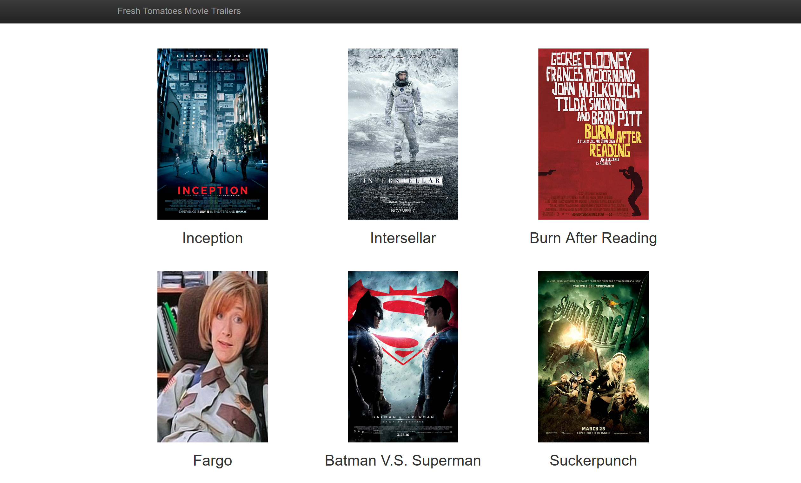

Media Center

I've built this during Udacity's full-stack nanodegree program. The purpose of this project is to demonstrate the use of a Python to generate a static webpage. Python code pulls data which describes my favorite (title, image, etc.) from a class, populates HTML template with it, and opens it in a browser. The generated webpage displays a grid of my favorite movies. Each cell of the grid contains a title and a visual of a movie. User may click a movie cell to bring up a pop-up of a YouTube video.